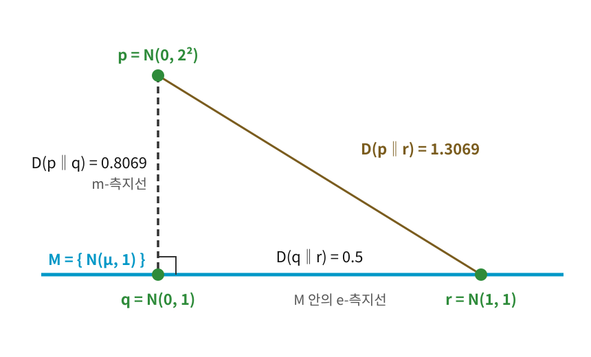
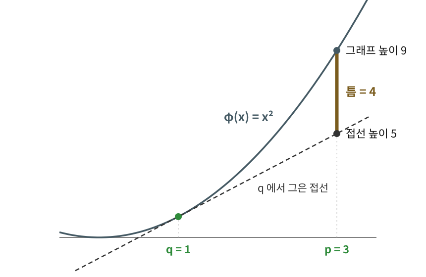
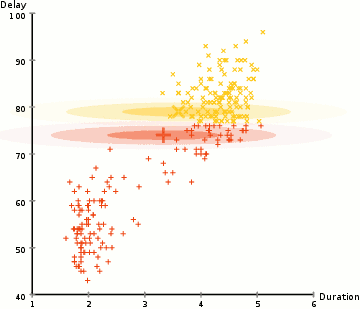
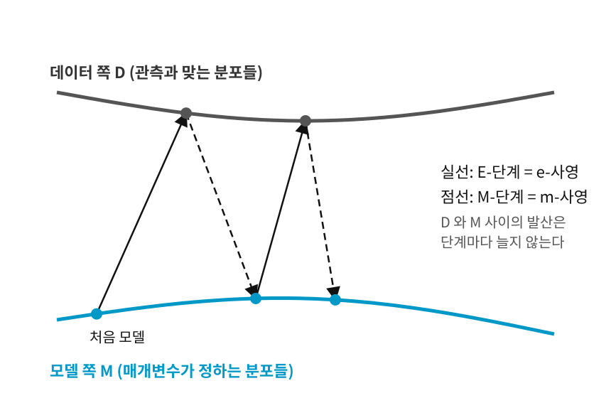

유클리드 공간에서는 점 p에서 직선이나 평면으로 가장 가까운 점을 찾을 때 수선의 발을 내리고, 피타고라스 정리가 그 점이 가장 가깝다는 것을 보장한다. 앞 절에서 발산으로 잰 사영을 보았다. 사영에도 수선의 발과 피타고라스 정리가 있을까? 숫자로 먼저 확인해 보자.
따라 계산해 보기 2 — 피타고라스 등식을 숫자로 확인하기
분산이 1로 고정된 정규분포 M={N(μ,1)}은 지수족이라 e-평탄하다. M 밖의 점 p=N(0,22)을 M으로 m-사영하면, 평균만 맞춘 q=N(0,1)이 나온다(m-사영은 평균 같은 기댓값을 맞추는 사영이다). M 위의 다른 점 r=N(1,1)을 골라 두 정규분포 사이의 KL 식 D(N(μ1,σ12)∥N(μ2,σ22))=logσ1σ2+2σ22σ12+(μ1−μ2)2−21로 세 변을 계산하면
D(p∥r)=log21+24+1−21≈1.3069
D(p∥q)=log21+24−21≈0.8069
D(q∥r)=0+21+1−21=0.5
이고, 실제로 0.8069+0.5=1.3069가 된다. 직각삼각형에서 빗변의 제곱이 두 변의 제곱의 합인 것과 똑같은 모양이다. r을 N(2,1)로 옮겨도 2.8069=0.8069+2로 등식이 유지되고, M 위의 어느 점으로 바꿔도 마찬가지다.
빗변의 발산이 두 변의 발산의 합과 딱 맞았다.
쌍대 직교와 세 변의 발산
위 계산의 조건을 그대로 일반화하면 정리가 된다. D를 KL 발산이라 하자. M이 e-평탄한 부분매니폴드(예: 지수족)이고, q가 p를 M으로 내린 m-사영이라 하자. 곧 p와 q를 잇는 m-측지선이 M과 직교한다. 그러면 M 위의 모든 점 r에 대해 다음이 성립한다.
이것이 일반화된 피타고라스 정리 (발산의 직각삼각형 / Generalized Pythagorean Theorem)로, 유클리드 기하의 피타고라스 정리 ∣pr∣2=∣pq∣2+∣qr∣2의 정보기하학적 일반화다. "거리의 제곱"이 "발산"으로, "직교"가 "p에서 내려오는 m-측지선과 M 안의 e-측지선의 직교"로 바뀌었다. 보통의 피타고라스 정리가 직각삼각형에서만 성립하듯, 이 정리도 서로 다른 두 종류의 측지선이 직교하는 “쌍대 직교” 조건이 있어야 성립한다. 이 등식에서 곧바로 D(p∥r)≥D(p∥q)가 나오므로, q가 M 위에서 p에 가장 가까운 점이라는 것도 함께 따라온다.

따라 계산해 보기 2의 세 점으로 그린 발산의 직각삼각형. M 은 분산이 1인 정규분포들의 모임이고, p 에서 내려온 m-측지선이 q 에서 M 과 직교한다. 두 변의 발산 0.8069와 0.5를 더하면 빗변의 발산 1.3069가 된다. 실제 공간은 휘어 있어 곧은 선은 그림을 위한 것이다
그런데 피타고라스 정리는 유클리드 거리의 제곱에 대한 정리다. KL 발산이 왜 거리의 제곱처럼 더해질까? 직각은 어디에 숨어 있을까? 이 물음에 답하려면 KL 발산과 거리의 제곱을 한 가지 방법으로 만들어 내는 틀이 필요하다.
역사: 레프 브레그만 (Lev M. Bregman, 1941–2023)
KL 발산은 확률분포에만 쓰는 양이다. 이것을 더 일반적인 틀로 넓힌 사람이 소련의 수학자 레프 브레그만이다.
브레그만은 1966년 레닌그라드 대학에서 여러 볼록집합(어느 두 점을 이어도 그 선분이 안에 머무는 집합)이 함께 겹치는 곳의 한 점을 찾는 방법으로 박사 학위를 받았다. 조건이 여럿 걸린 최적화 문제에서는 조건 하나하나가 볼록집합을 이루고, 모든 조건을 지키는 답은 그 집합들이 겹치는 곳에 있다. 이런 점을 찾는 익숙한 방법은 지금 점에서 집합 하나로 가장 가까운 점(유클리드 거리로 잰 사영)을 찾아 옮기고, 다음 집합으로 또 옮기기를 되풀이하는 것이다. 1967년 논문 「볼록집합의 공통점을 찾는 이완 방법과 그 볼록 계획 문제 풀이에의 응용」에서 브레그만은 이 "가장 가까운 점"을 유클리드 거리 대신 볼록함수 하나로 만든 양으로 재도 같은 되풀이가 통하게 했다. 그 양이 지금 브레그만 발산이라 부르는 것이다. 브레그만은 뒤에 이스라엘로 옮겨 베에르셰바의 산업수학연구소에서 일했다.
브레그만 발산은 정보기하학의 핵심 도구가 되었다. 사영을 되풀이하는 그의 출발점은 이 장 끝의 EM 알고리즘과도 같은 모양이다.
접선 아래로 벌어진 틈
가장 단순한 볼록함수 ϕ(x)=x2로 시작하자. 아래 그림처럼 q=1에서 그래프에 접선 y=1+2(x−1)을 긋고, p=3에서 그래프와 접선의 높이를 견준다. 그래프는 9, 접선은 5라서 틈이 4이고, 이 틈은 (3−1)2=4와 같다. 볼록함수와 접선 사이의 틈이 거리의 제곱을 만든 것이다.

볼록함수 φ(x) = x² 의 그래프와 q = 1 에서 그은 접선(점선). p = 3 에서 그래프 높이 9와 접선 높이 5 사이의 틈 4가 (3 − 1)² 과 같다
이것을 브레그만 발산이라 부른다(볼록함수가 만드는 비대칭 거리). q에서 그은 접선(여러 차원이면 접하는 평면)이 p 위치에서 그래프보다 얼마나 아래에 있는지를 잰다. 볼록함수의 그래프는 항상 접선 위에 있으므로 Dϕ≥0이다. ϕ(x)=∥x∥2이면 유클리드 거리의 제곱이 나오고, 확률벡터에서 ϕ(x)=∑xilogxi로 잡으면 KL 발산이 나온다. KL 발산과 거리의 제곱이 같은 틀, 곧 볼록함수와 접선 사이의 틈에서 나온 셈이다.
남는 항이 직각을 잰다
이제 처음 물음, "왜 더해지는가"에 답할 수 있다. 세 점 p, q, r의 틈을 브레그만 발산의 정의대로 풀어 쓰면, ϕ(p), ϕ(q), ϕ(r)가 모두 지워지고 한 항만 남는다.
포물선에서 p=3, q=1, r=0을 넣어 보면 9=4+1+4다. 남는 항이 4나 된다. 한 줄 위의 세 점으로는 직각을 만들 수 없으니 남는 항이 사라질 수 없다. ϕ(x)=∥x∥2인 평면에서는 ∇ϕ(x)=2x라서 남는 항이 2⟨q−r,p−q⟩가 되고, 두 변이 꼭짓점 q에서 직각으로 만날 때만 0이 된다. 그때 보통의 피타고라스 정리가 나온다. 거리의 제곱이 더해지는 까닭은 직각이 남는 항을 지우기 때문이다.
KL 발산에서는 ϕ(x)=∑xilogxi라 ∇ϕ(x)의 성분이 logxi+1이고, 남는 항은 ∑i(pi−qi)(logqi−logri)가 된다. 두 벡터의 내적인데, 한쪽 p−q는 두 분포를 섞는 방향(q에서 p로 가는 m-측지선의 방향)이고 다른 쪽 logq−logr는 로그를 섞는 방향(r에서 q로 가는 e-측지선의 방향)이다. 서로 다른 두 종류의 방향이 만나 이 내적이 0이 되는 것, 이것이 쌍대 직교다. 앞의 정규분포 예에서 이 항이 왜 0이었는지, q를 사영점이 아닌 곳으로 옮기면 얼마가 남는지는 아래 문제 8에서 직접 셈해 본다.
짝을 이루는 두 접속 모두로 보아 휘지 않은 공간(쌍대 평탄 공간)에서는 이런 발산이 늘 어떤 볼록함수의 브레그만 발산으로 나오고, 그래서 이 피타고라스 정리가 자연스럽게 성립한다는 것이 아마리의 이론으로 밝혀진다.
ML에서: EM 알고리즘과 미러 디센트
EM 알고리즘은 관측되지 않은 숨은 값(예: 데이터 점 하나하나가 어느 무리에서 왔는지)이 있는 모델의 매개변수를 맞추는 방법이다. 지금 모델로 숨은 값의 확률을 채우는 단계(E-단계, 기댓값 Expectation)와 채운 값으로 매개변수를 다시 맞추는 단계(M-단계, 최대화 Maximization)를 번갈아 한다. 아래 그림은 두 무리로 모인 실제 데이터에서 그 과정을 보인 것이다.

EM 알고리즘이 실제 데이터에서 하는 일 — 두 무리로 모인 데이터 점(가로축 Duration, 세로축 Delay) 위에서 정규분포 두 개(타원)가 단계를 거듭하며 각 무리에 자리 잡아 간다
정보기하학으로 보면 이 왕복은 두 사영의 교대다. 관측 데이터와 맞는 분포들의 모임(데이터 쪽)과 모델의 매개변수가 정하는 분포들의 모임(모델 쪽)을 생각하면, 숨은 값을 채우는 단계는 지금 모델을 데이터 쪽으로 내리는 e-사영이고, 다시 맞추는 단계는 그 결과를 모델 쪽으로 내리는 m-사영이다(아마리, 1995). E와 e, M과 m의 글자가 짝지어 맞지만 서로 다른 낱말의 머리글자다(E·M은 기댓값과 최대화, e·m은 지수와 섞기). 두 쪽이 늘 같은 계산인 것도 아니어서, 모델 쪽 모임이 굽은 경우에는 E-단계와 e-사영이 다른 답을 내기도 한다.

두 사영의 교대. 위의 곡선은 관측과 맞는 분포들의 모임(데이터 쪽), 아래 곡선은 모델이 나타낼 수 있는 분포들의 모임(모델 쪽)이다. 처음 모델에서 출발해 데이터 쪽으로 e-사영(실선), 모델 쪽으로 m-사영(점선)을 번갈아 하며 두 모임이 가장 가까워지는 곳으로 다가간다
각 단계가 한쪽 점을 고정하고 두 모임 사이의 발산을 가장 작게 하므로, 발산은 단계마다 늘어나지 않는다. EM 알고리즘이 한 번도 뒷걸음질하지 않는 까닭이다. 두 모임이 평탄하면 피타고라스 정리가 한 단계에서 줄어든 양을 두 변으로 나누어 보여 준다. 다만 도착하는 곳은 가장 가까운 점이 아니라 국소적으로 가장 가까운 점일 수 있다.
통신 채널이 보낼 수 있는 정보량(채널 용량)을 구하는 블라후트-아리모토 알고리즘도 두 묶음의 변수를 번갈아 고치는 같은 꼴의 알고리즘이다. 다만 채널 용량은 두 모임 사이의 발산을 가장 크게 하는 문제라서, 두 사영을 그대로 번갈아 하는 것만으로는 풀리지 않는다.
브레그만 발산 자체도 최적화 알고리즘에 쓰인다. 경사 하강의 한 걸음은 "손실의 1차 근사 + 이동 거리의 제곱"을 최소화하는 점으로 가는 것이라고 볼 수 있다. 미러 디센트는 이 이동 거리의 제곱 자리에 브레그만 발산을 넣는다. ϕ(x)=∥x∥2이면 보통의 경사 하강으로 돌아가고, 확률벡터 위에서 ϕ(x)=∑xilogxi를 쓰면 각 성분에 exp(−학습률×그래디언트성분)을 곱한 뒤 합이 1이 되게 다시 나누는 갱신이 나온다. 매개변수가 확률벡터처럼 모양이 정해진 공간 위를 움직일 때, 그 모양에 맞는 발산으로 걸음을 재는 셈이다.
문제 7 — 도로에서 가장 가까운 점
확인 집 H에서 곧은 도로까지 수직으로 잰 거리가 4 km이고, 그 수선의 발을 F라 하자. 도로 위의 가게 S는 F에서 3 km 떨어져 있다. (가) H에서 S까지의 곧은 거리는? (나) 친구는 도로에서 집에 가장 가까운 점이 F가 아니라 F에서 가게 쪽으로 1 km 간 G라고 우긴다. HG² + GS²을 HS²과 견주어 보라. 차이는 어디서 오는가?
계산 따라 계산해 보기 2의 설정(M={N(μ,1)}, p=N(0,22), r=N(1,1), 빗변 D(p∥r)≈1.3069)에서 꼭짓점을 m-사영점 N(0,1)이 아닌 M 위의 점 q′=N(0.5,1)로 바꾼다. (가) D(p∥q′)+D(q′∥r)를 빗변과 견주어라. (나) 차이를 남는 항 ∫(p(x)−q′(x))logr(x)q′(x)dx로 계산해 맞는지 확인하고, 꼭짓점이 N(0,1)일 때는 왜 이 항이 0인지 설명하라.
같이 풀기 세션 8
김민준
두 정규분포 사이의 KL 식에 넣으면 D(p∥q′)=log21+24+0.25−21≈0.9319, D(q′∥r)=21+0.25−21=0.125요. 합이 1.0569라서 빗변 1.3069에 0.25가 모자라요.
이서연
(나)는 로그부터 풀자. 분산이 둘 다 1이니까 logrq′=2(x−1)2−(x−0.5)2=−0.5x+0.375. x의 1차식이야. 여기에 p−q′를 곱해 적분하면 상수항은 두 분포의 넓이가 똑같이 1이라 지워지고, x 항만 남아. −0.5×(p의평균0−q′의평균0.5)=0.25. 딱 맞아.
선생님
꼭짓점이 N(0,1)이면요? 같은 계산을 해 볼래요?
김민준
로그 비는 또 x의 1차식이고, 남는 항은 (어떤 수) × (p의 평균 − 꼭짓점의 평균)이 돼요. 둘 다 0이라 남는 항이 0이네요. m-사영이 평균을 맞추는 점이라서 그런 거였어요!
선생님
그래요. 이 모임에서는 평균을 맞추는 것이 곧 쌍대 직교였어요.
이서연
아까 도로 문제랑 같네요. G가 수선의 발에서 1 km 비켜나서 4가 남았던 것처럼, 꼭짓점이 평균을 맞춘 점에서 0.5 비켜나서 0.25가 남았어요.
문제 9 — 비중을 음수로 만들지 않는 걸음
계산 세 전문가 모델의 답을 섞어 쓰는 비중 w=(0.5,0.3,0.2)를 학습한다(세 수의 합은 1). 지금 손실의 그래디언트가 (1,0,−1)이고 학습률은 1이다. (가) 보통의 경사 하강(비중 − 학습률 × 그래디언트)으로 한 걸음 가면 비중은 어떻게 되는가? (나) 미러 디센트(성분마다 exp(−학습률×그래디언트성분)을 곱한 뒤 합이 1이 되게 나눔)로 한 걸음 가면?